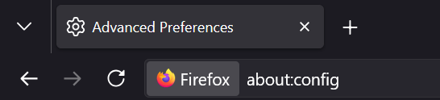
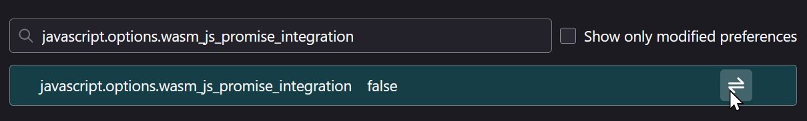
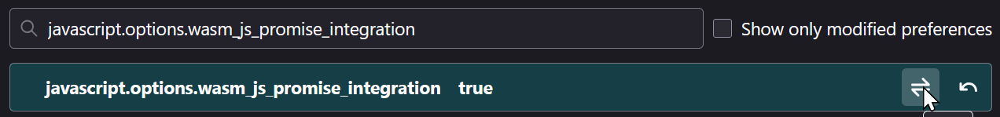

dlPro
dlPro
JSPI Error
Uh oh!
Looks like your browser doesn't have WebAssembly JavaScript Promise Integration available/enabled. dlPro depends on this API to run 2 essential pieces of its infrastructure: request proxying and FFmpeg calling.
Don't worry!
If you're on a recent version of Firefox, you can fix this! The feature exists, it just needs to be enabled!
How to enable on Firefox
-
Go to
about:configin your browser's address bar.
-
Search for
javascript.options.wasm_js_promise_integration. -
If it says
false, click the ⇄ (toggle) icon so it saystrue.

- Restart your browser (make sure to close ALL Firefox windows, not just the tab) and try again!
Other browsers
If your browser is Firefox/Quantum/Gecko based (Firefox, Tor, Waterfox, etc), follow the Firefox instructions.
If your browser is Chrome/Chromium based (Chrome, Edge, Opera, Brave, Vivaldi, etc.) JSPI should already be enabled. Make sure your browser is up-to-date. If you are running the latest version, Submit a bug report on the GitHub.
If your browser is based on else, dlPro doesn't have first-class support for your browser, but you can submit a bug report on the GitHub anyways (or just switch to Firefox/Chromium :p)